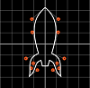

PT-BR
Welcome to the Introscope
João Antonio de F. P. e Ferreira, 27 years old, is an independent programmer doing work ranging from software art and creative coding to game development and desktop utilities since 2013. These are some of his works.
Software Art
Creative Coding
Game Development

Utilities
Puzzles & Math